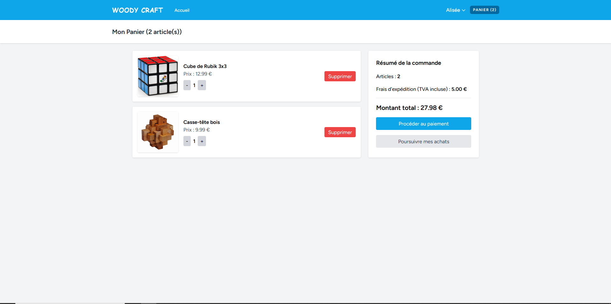
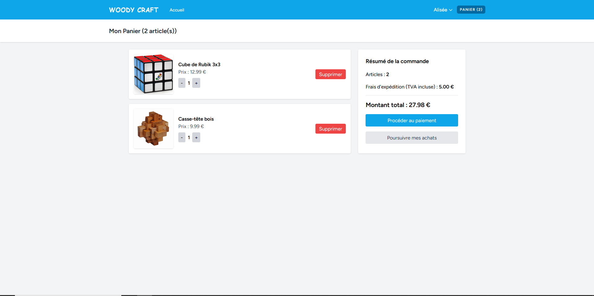
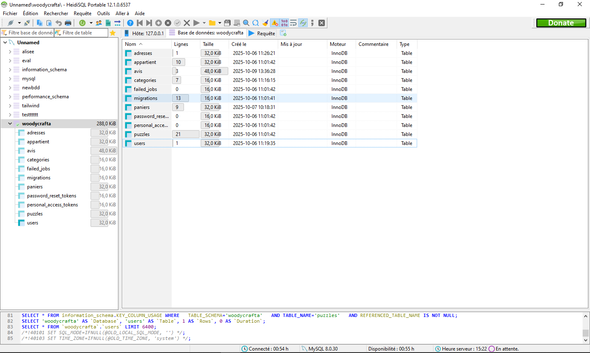
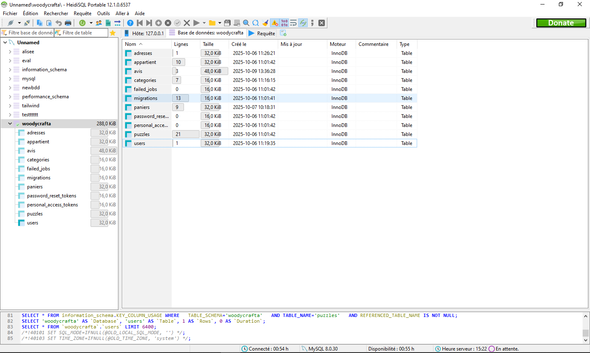

Veille technologique
Je fais une veille régulière sur l'intelligence artificielle appliquée à la psychologie clinique.
Pour ce faire j'ai utilisé un flux RSS, plus précisement l'outil Google Alert.
- Les IA d'aide au diagnostic
- Les chatbots thérapeutiques
Consulter mon tableau de bord


Projets scolaire
Netflix en PHP
Développement d’une application web de type “Netflix”, réalisée en PHP, avec une gestion complète des films via une base de données.
Le projet permet d’afficher dynamiquement un catalogue de contenus à partir des données stockées en base (titres, descriptions, catégories)


Monopoly en python
Réalisation en groupe d’un Monopoly en Python, basé sur une approche orientée objet, sans interface graphique.
Le projet est une modélisation des idées principales du jeu (joueurs, cases, propriétés, cartes, banque) et sur la gestion des règles et des tours de jeu via des classes et des méthodes dédiées
Woodycraft en laravel
Conception et développement d’un site e-commerce de puzzles avec Laravel et une base de données gérée en local via Laragon.

 

 
